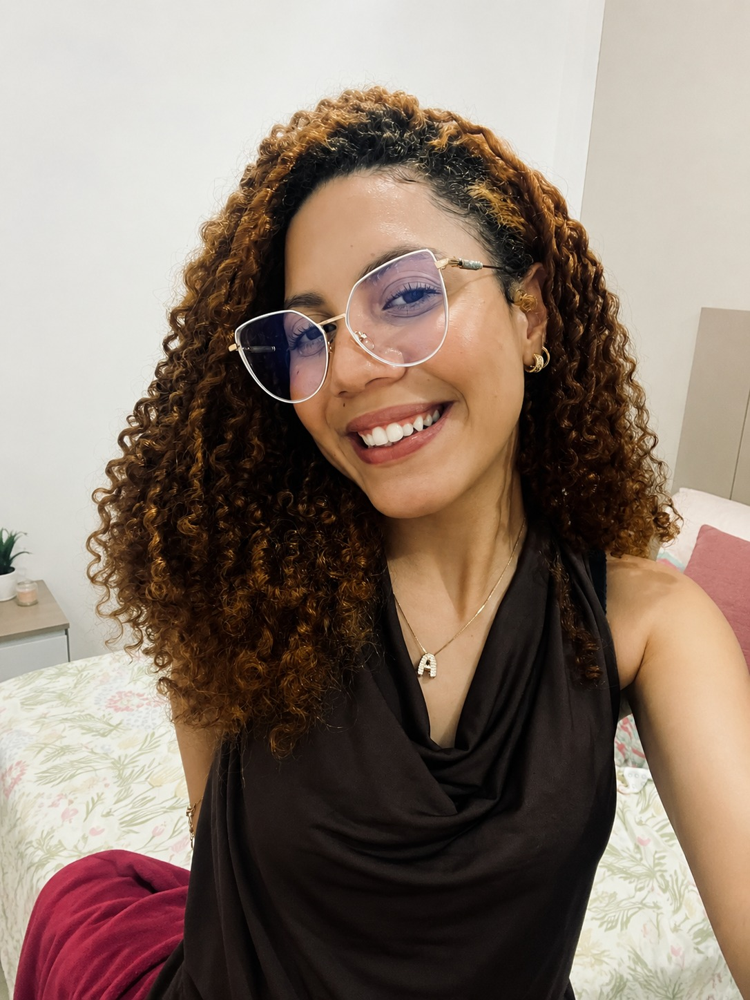

Sou estudante de tecnologia apaixonada por desenvolvimento web, segurança digital e inovação. Possuo formação técnica em Desenvolvimento de Sistemas pelo IFPE, onde participei de projetos acadêmicos voltados para tecnologia e impacto social.
Atualmente, curso Segurança Cibernética na Gran Faculdade, ampliando meus conhecimentos em proteção digital, análise de vulnerabilidades e boas práticas de segurança da informação.
Busco oportunidades que me permitam crescer profissionalmente, aplicar meus conhecimentos em projetos reais e contribuir com soluções que gerem valor por meio da tecnologia.
Técnico em Desenvolvimento de Sistemas - IFPE Jaboatão dos Guararapes
Segurança Cibernética - Gran Faculdade
Projetos de Desenvolvimento Web e Cybersecurity
Além da tecnologia, gosto de criar projetos que unem criatividade, design e impacto social, buscando sempre aprender novas ferramentas e explorar novos desafios.